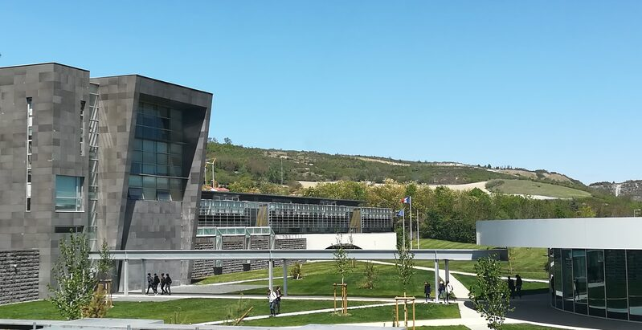

Mon Cursus Scolaire
Supérieur
BUT Informatique - Aubière
Le B.U.T. Informatique est un diplôme national, constitué d'enseignements et d'activités encadrées, de travaux en groupes encadrés sur des projets et enfin de mises en situations professionnelles à travers 26 semaines de stage ou d'alternance en entreprise.
Lycée
René Descartes
Le lycée René DESCARTES de COURNON D'AUVERGNE est un lycée d'enseignement général et technologique qui a ouvert ses portes en 1995.
Obtention baccalauréat avec mention. Spécialités mathématiques et physique-chimie.
